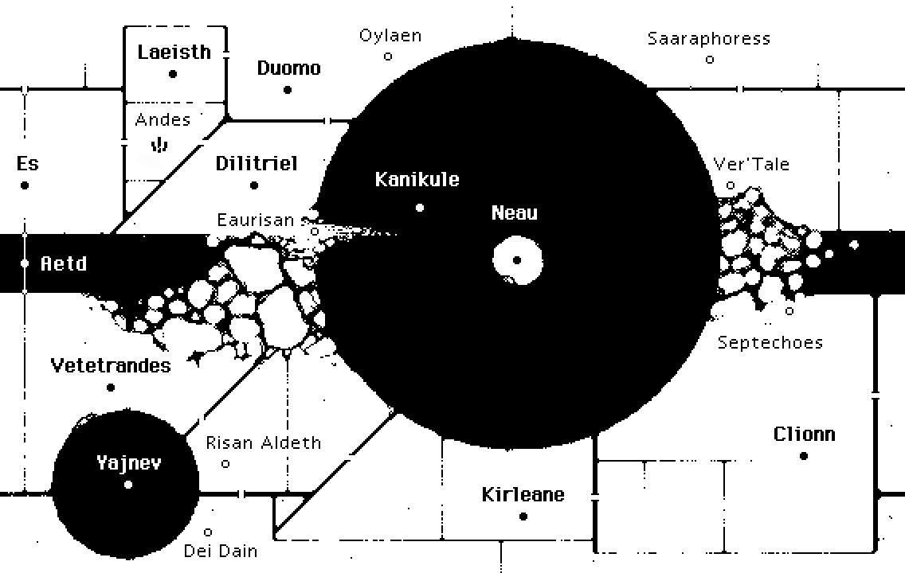
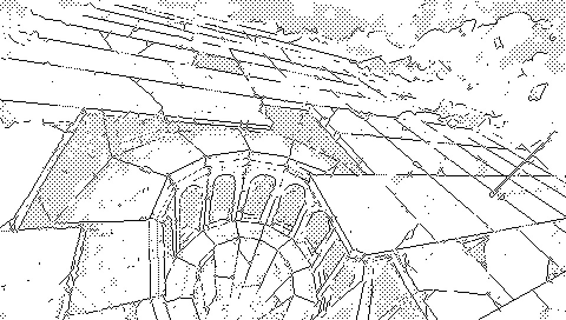
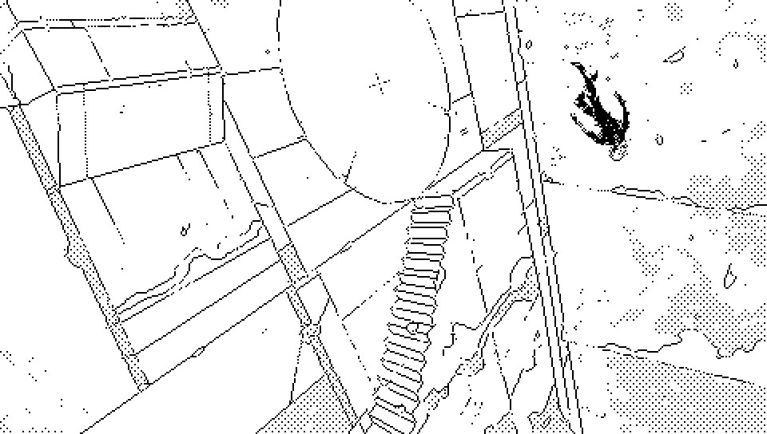
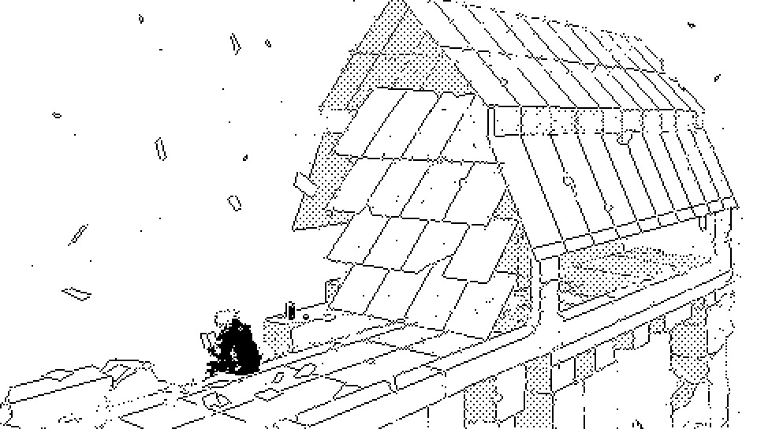
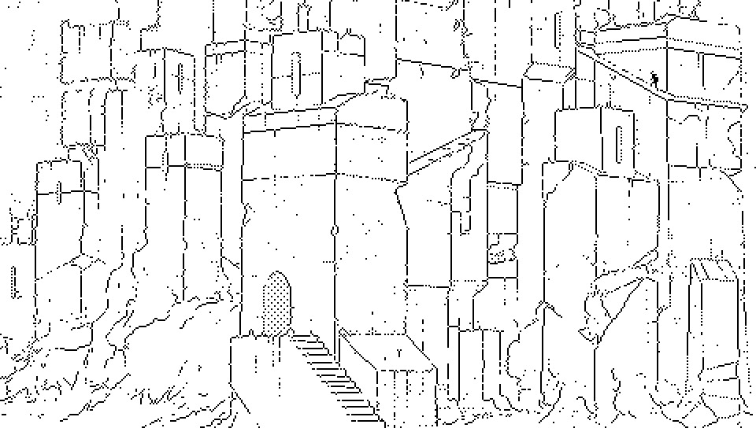
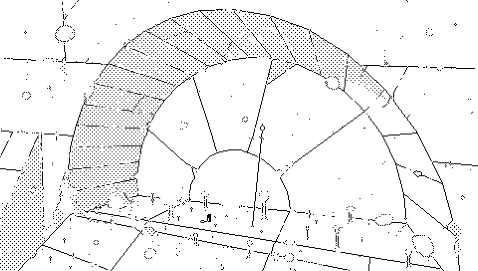
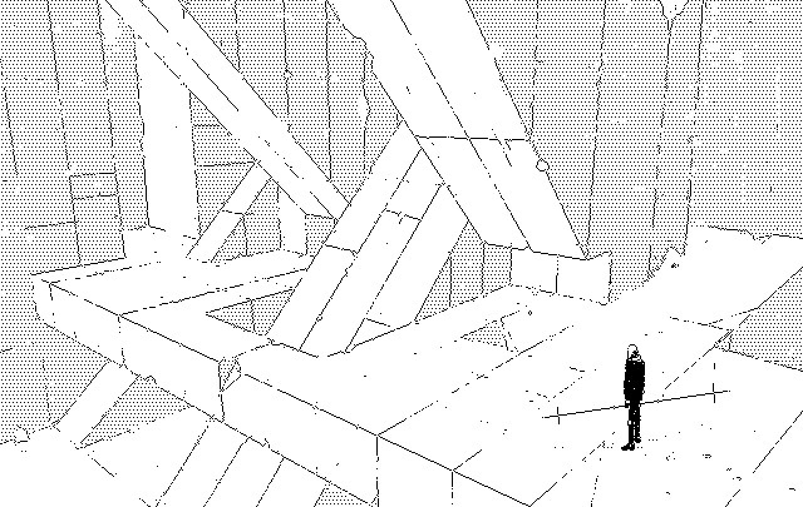
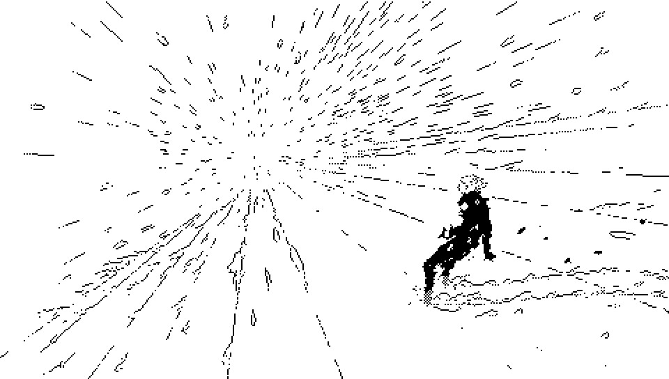

As far as Aliceffekt is concerned, the Ver'Tale name in some title indicates that the track is part of a recovered diary and may not exactly follow the album's timeline.

Dinaisth is the location onto which unfolds the events of the Neauismetica.
Dinaisth was periodically transformed and inhabited by multiple groups, each leaving traces of their visit in the form of tools, notes and artifacts. Its proximity to the Ehrivevnv megastructure, by which it is orbited, is the principal reason for which the earlier explorers landed on Dinaisth, its estimated position at the end of the universe's life is what brought the protagonists of the Neauismetica.

Vetetrandes is the general area around the Yajnev blast.
As you approach the epicenter of the lock, time becomes increasingly more unmoving. At its center, one would find the corpse of Yajnev, and where its head would have been, a hollow mask. Locked inside the mask was possibly, at one time, the only instance of space that can be said to be "outside" of the Occurring.
The trek across Vetetrandes is only possible through the guiding of an Actor, as the local void existing in Vetetrandes is unacted, unoperated and unrendered. Vetetrandes is also includes Risan Aldeth. It shares the southern hemisphere of Dinaisth with Clionn which is unaffected by the Maelstrom.
The Neon Hermetists believe this location to be an ancient and broken Soies Machine.

Laeisth is a desert on Dinaisth.
Surrounding an Oasis, a blackened chasm where creeps the clones of its violent host rlionn, the Andes castel stands quiet. Laeisth is located between Es and Duomo, on the northen hemisphere of Dinaisth.
Listen to the Laeisthic chapters.

Dilitriel is the central region of Dinaisth.

Whiiners is mountain in Dilitriel facing the Duomic shore.
The high peak is covered with the remains of structures and habitations similar to those found in Duomo.

Duomo covers the northern pole of Dinaisth.
Duomo is located north of Es and Laeisth, it hosts some of the only remains of domestic constructions from the earlier times.
Listen to the Duomic chapters.

Kirleane is the southern coast of the Kanikule ocean.
Kirleane is located east of Risan Aldeth and Dei Dain, on the southern hemisphere of Dinaisth.
Kanikule is the ocean surrounding Neau.
Kanikule is a spacial distortion that gives the impression of an infinite ocean. An immortal would spend an infinite amount of time crossing it, effectively reaching the outer-shores mortal.
While one can sail away from its center, Neau, one cannot return to it, for it occupies no space in the ocean. Neau is a circular city at the center of Kanikule. The blue roofed city the birthplace of Lietal, and is also the place from which the Neauismetica derives its name.

Ver'Tale is the northern equatorial region of Dinaisth.
A gravitational anomaly makes structures temporarily weightless when Aitasla's orbit is parallel with the equator of Dinaisth. The combination of the oscillating downward pull and gale-force winds have created a terrain very hard to navigate. The Vertale islands, sometimes written Ver'Tale, are filled with the debris from the tunneling machines that once operated in Es.

Es is a vast empty wasteland in the northern emisphere of Dinaisth.
The wind-swept plains cover a vast network of disused structures. Sunken deep within the basin resides Paradichlorisse, and the Sunflowers a sort of light-emitting algae that grows on terasse-like steps that descend into the depths of Dinaisth.
incoming: audio faqs alicef aliceffekt children of bramble opal inquisitors habitants du soleil neauismetica neon hermetism ehrivevnv nohlxeserre vetetrandes laeisth andes castel kirleane ver tale characters neonev andes paradichlorisse yajnev devine lu linvega 2025